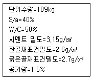
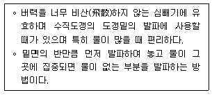
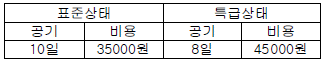
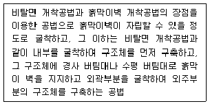
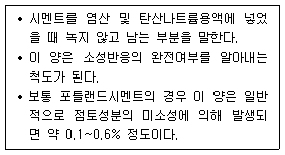
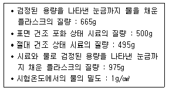
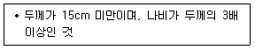
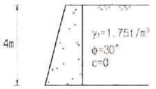
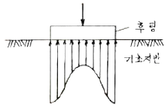
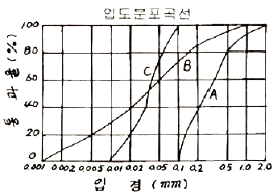

건설재료시험기사 (2012-09-15 기출문제)
1과목: 콘크리트공학
1. 23회의 압축강도 시험실적으로부터 구한 표준편차가 2.8MPa 이었다. 콘크리트의 설계기준압축강도가 28MPa인 경우 배합강도는? (단, 시험횟수 20회 일때의 표준편차의 보정계수는 1.08이고, 25회 일때의 표준편차의 보정계수는 1.03 이다.)
- 30MPa
- 31MPa
- 32MPa
- 33MPa
(정답률: 67%)

2. 콘크리트 타설에 대한 설명 중 옳지 않은 것은?
- 콘크리트를 2층 이상으로 나누어 타설할 경우, 상층의 콘크리트 타설은 원칙적으로 하층의 콘크리트가 굳기 시작하기 전에 해야 한다.
- 콘크리트 타설 도중에 표면에 떠올라 고인 블리딩수가 있을 경우에는 표면에 도랑을 만들어 제거하여야 한다.
- 한 구획 내의 콘크리트는 타설이 완료될 때까지 연속해서 타설해야 한다.
- 콘크리트는 그 표면이 한 구획 내에서는 거의 수평이 되도록 타설하는 것을 원칙으로 한다.
(정답률: 75%)
3. 숏크리트에 대한 설명으로 틀린 것은?
- 일반 숏크리트의 장기 설계기준압축강도는 재령 28일로 설정한다.
- 습식 숏크리트는 배치 후 60분 이내에 뿜어붙이기를 실시하여야 한다.
- 숏크리트의 초기강도는 재령 3시간에서 1.0~3.0MPa을 표준으로 한다.
- 굵은골재의 최대치수는 25mm의 것이 널리 쓰인다.
(정답률: 80%)
4. 아래 표와 같은 조건의 시방배합에서 굵은골재의 단위량은 약 얼마인가?

- 945kg
- 1015kg
- 1⑤2kg
- 1095kg
(정답률: 61%)
5. 고강도 콘크리트에 대한 일반적인 설명으로 틀린것은?
- 고강도 콘크리트의 설계기준압축강도는 일반적으로 40MPa 이상으로 하며, 고강도 경량골재 콘크리트 27MPa 이상으로 한다.
- 고강도 콘크리트의 워커빌리티 확보를 위해 AE감 수제를 사용함을 원칙으로 한다.
- 고강도 콘크리트의 제조시 잔골재율은 소요의 워커빌리티를 얻도록 시험에 의하여 결정하여야 하며, 가능한 적게 하도록 한다.
- 고강도 콘크리트의 제조시 단위 시멘트량은 소요의 워커빌리티 및 강도를 얻을 수 있는 범위 내에서 가능한 한 적게 되도록 시험에 의해 정하여야 한다.
(정답률: 75%)
6. 관리도에 의해 공정관리를 할 때 안정상태라고 볼 수 없는 경우는?
- 연속 25점 중 1점이 관리한계선을 벗어났을 때
- 관리한계선 내의 연속 3점이 연속적으로 상승하였을 때
- 점들의 나열된 방향이 이상이 없을 때
- 점이 관리한계선 내에 있으나 점들이 한계선에 접하여 자주 나타날 때
(정답률: 66%)
7. 콘크리트 배합에 관한 일반적인 설명으로 틀린 것은?
- 콘크리트를 경제적으로 제조한다는 관점에서 될 수 있는 대로 최대 치수가 작은 굵은 골재를 사용하는 것이 유리하다.
- 고성능 공기연행감수제를 사용한 콘크리트의 경우로서 물-결합재기 및 슬럼프가 같으면, 일반적인 공기 연행 감수제를 사용한 콘크리트와 비교하여 잔골재율을 1~2%정도 크게 하는 것이 좋다.
- 공사 중에 잔골재의 입도가 변하여 조립률이 ±0.20 이상 차이가 있을 경우에는 워커빌리티가 변화 하므로 배합을 수정할 필요가 있다.
- 유동화 콘크리트의 경우, 유동화 후 콘크리트의 워커빌리티를 고려하여 잔골재율을 결정할 필요가 있다.
(정답률: 79%)
8. 프리스트레스트 콘크리트(PSC)에서 굵은골재의 최대치수는 일반적인 경우 얼마를 표준으로 하는가?
- 15mm
- 25mm
- 40mm
- 50mm
(정답률: 92%)
9. 프리스트레스트 콘크리트에 있어서 프리스트레싱을 할때의 콘크리트의 압축강도는 프리스트레스를 준 직후 콘크리트에 일어나는 최대압축 응력의 최소 몇 배 이상이어야 하는가?
- 1.3배
- 1.5배
- 1.7배
- 2.0배
(정답률: 84%)
10. 일반콘크리트에서 재료의 계량 시 허용오차가 가장 큰 것은?
- 시멘트
- 물
- 혼화제
- 혼화재
(정답률: 67%)
11. 습윤상태인 모래시료 630g을 건조기에서 완전 건조한 상태의 질량이 600g이었다. 이 모래의 표면수율이 3%라면 흡수율은?
- 1.57%
- 1.94%
- 2.32%
- 2.87%
(정답률: 64%)
12. 경량골재콘크리트에 대한 일반적인 설명으로 틀린것은?
- 경량골재는 일반 골재에 비하여 물을 흡수하기 쉬우므로 충분히 물을 흡수시킨 상태로 사용하여야 한다.
- 경량골재콘크리트는 가볍기 때문에 슬럼프가 작게 나오는 경향이 있다.
- 운반중의 재료분리는 보통콘크리트와는 반대로 골재가 위로 떠오르고 시멘트페이스트가 가라앉는 경향이 있다.
- 경량골재콘크리트는 가볍기 때문에 재료분리가 발생하기 쉬워 다짐시 진동기를 사용하지 않는 것이 좋다.
(정답률: 81%)
13. 일반콘크리트의 비비기에서 강제식 믹서일 경우 믹서안에 재료를 투입한 후 비비는 시간의 표준은?
- 30초 이상
- 1분 이상
- 1분 30초 이상
- 2분 이상
(정답률: 88%)
14. 콘크리트 양생 중 적절한 수분공급을 하지 않은 경우 발생할 수 있는 결함은?
- 초기 건조균열이 발생한다.
- 콘크리트의 부등침하에 의한 침하수축균열이 발생한다.
- 시멘트, 골재입자 등이 침하함으로써 물의 분리 상승 정도가 증가한다.
- 블리딩에 의하여 콘크리트 표면에 미세한 물질이 떠올라 이음부 약점이 된다.
(정답률: 84%)
15. 다음 중 굳지않은 콘크리트의 워커빌리티 시험방법으로 적당하지 않은 것은?
- 슬럼프시험
- Vee-Bee 컨시스턴시 시험
- Vicat 장치에 의한 시험
- 구관입 시험
(정답률: 90%)
16. 기존 구조물의 철근부식을 평가할 수 있는 비파괴 시험방법이 아닌 것은?
- 자연전위법
- 분극저항법
- 전기저항법
- 관입저항법
(정답률: 92%)
17. 콘크리트 진동다지기에서 내부진동기 사용방법의 표준으로 틀린 것은?
- 2층 이상으로 나누어 타설한 경우 상층 콘크리트의 다지기에서 내부진동기는 하층의 콘크리트 속으로 찔러 넣어면 안 된다.
- 내부진동기의 삽입간격은 일반적으로 0.5m 이하로 하는 것이 좋다.
- 1개소당 진동시간은 다짐할 때 시멘트 페이스트가 표면 상부로 약간 부상하기 까지 한다.
- 내부진동기는 콘크리트를 횡방향으로 이동시킬 목적으로 사용하지 않아야 한다.
(정답률: 82%)
18. 수중 콘크리트에 대한 설명으로 틀린 것은?
- 일반 수중 콘크리트는 수중에서 시공할 때의 강도가 표준공시체 강도의 0.2~0.5배가 되도록 배합강도를 설정하여야 한다.
- 수중불분리성 콘크리트에 사용하는 굵은 골재의 최대치수는 40mm이하를 표준으로 한다.
- 지하연속벽에 사용하는 수중 콘크리트의 경우, 지하연속벽을 가설만으로 이용할 경우에는 단위 시멘트량은 300kg/m이상으로 하여야 한다.
- 일반 수중 콘크리트의 타설에서 완전히 물막이를 할 수 없는 경우에도 유속은 50mm/s 이하로 하여야한다.
(정답률: 43%)
19. 콘크리트의 크리프에 영향을 미치는 요인 중 틀린것은?
- 온도가 높을수록 크리프는 증가한다.
- 조강시멘트는 보통시멘트보다 크리프가 작다.
- 단위 시멘트량이 많을수록 크리프는 감소한다.
- 물-시멘트비, 응력이 클수록 크리프는 증가한다.
(정답률: 69%)
20. 넓이가 넓은 평판구조에서는 두께가 최소 얼마 이상일 때 매스콘크리트로 다루어야 하는가?
- 0.5m
- 0.8m
- 1m
- 1.5m
(정답률: 69%)
2과목: 건설시공 및 관리
21. 진동과 소음이 적어 시가지 공사에 적합하고 벤토 나이트용액을 사용하는 지하연속벽 공법 중 주열식(柱列式) 공법이 아닌 것은?
- BH공법
- RGP공법
- ONS공법
- ICOS공법
(정답률: 66%)
22. 아스팔트 포장의 기층으로 사용하는 가열혼합식에 의한 아스팔트 안정처리기층을 무엇이라 하는가?
- 보조기층
- 블랙베이스
- 입도조정층
- 화이트베이스
(정답률: 78%)
23. 노즐의 고압수를 이용하여 지름 10cm내외에 굴착 공을 형성한 후, 고압의 경화재 분사와 함께 노즐을 회전하며 상승시켜, 지반내 80cm내외의 지중파일 형성 및 연약지반처리 효과를 갖는 공법은?
- JSP공법
- CIP공법
- MIP공법
- Slurry Wall 공법
(정답률: 60%)
24. 내∙외관을 동시에 타격하여 소정의 깊이에 도달하면 내관을 뽑아내고 외관안에 콘크리트를 치는 방법으로 외관은 지중에 남겨두는 현장 콘크리트 말뚝은?
- 강널말뚝
- PIP 말뚝
- 레이몬드말뚝
- 페데스탈말뚝
(정답률: 72%)
25. 아스팔트 포장의 전압 끝솔지에 이용되는 롤러는 다음 중 어느 것인가?
- macadam roller
- tandem roller
- tire roller
- 피견인식 roller
(정답률: 71%)
26. 아래의 표에서 설명하는 심빼기 발파공법의 명칭은?

- 스윙컷
- 벤치컷
- 번컷
- 피라미드컷
(정답률: 68%)
27. 암발파에 있어서 스무스 블라스팅(smooth blasting)에 대한 설명으로 옳은 것은?
- 인위적으로 자유면을 증가시켜 효율적인 발파작업이 될 수 있도록 하는 작업이다.
- 일반적으로 복공 콘크리트가 더 필요하게 되어 비경제적이다.
- 암석면을 거칠게 하며, 낙석의 위험성이 많다.
- 여굴이 감소된다.
(정답률: 49%)
28. PERT의 4원칙으로 틀린 것은?
- 단계원칙
- 경험원칙
- 활동원칙
- 공정원칙
(정답률: 66%)
29. 다져진 토량 37800m3 를 성토하는데 흐트러진 토량 30000m3 가 있다. 이 때, 부족토량은 자연 상태토량(m3)으로 얼마인가? (단, 토량변화율 L = 1.25, C = 0.9)
- 22000m3
- 18000m3
- 15000m3
- 11000m3
(정답률: 66%)
30. 시멘트 콘크리트 포장에 대한 설명으로 틀린 것은?
- 내구성이 풍부하다.
- 양생기간이 짧고, 주행성이 좋다.
- 부분적인 보수가 곤란하다.
- 재료구입이 용이하다.
(정답률: 75%)
31. 공사 기간의 단축과 연장은 비용경사(cost slope)를 고려하여 하게 되는데 다음 표를 보고 비용 경사를 구하면?

- 5000원/일
- 10000원/일
- 15000원/일
- 20000원/일
(정답률: 84%)
32. 유토곡선(mass curve)의 성질에 관한 설명으로 틀린 것은?
- 유토곡선이 평형선 아래에서 종결될 때에는 토량이 부족하고 평형선 위에서 종결될 때는 토량이 남는다.
- 평형선상에서 토량은 “0” 이다.
- 유토곡선상에 동일 단면 내의 절토량 ˙ 성토량은 구할 수 없다.
- 유토곡선의 모양이 볼록할 때에는 절취굴착토가 오른쪽에서 왼쪽으로 운반되고, 곡선의 모양이 오목일 때에는 절취굴착토가 왼쪽에서 오른쪽으로 운반된다.
(정답률: 69%)
33. 아래의 표에서 설명하는 흙막이 굴착공법의 명칭은?

- 트렌치 컷 공법
- 역타 공법
- 언더피닝 공법
- 아일랜드 공법
(정답률: 70%)
34. 공기 케이슨 공법에 대한 다음 설명 중 틀린 것은?
- 비교적 소규모의 공사나 심도가 얕은 기초공에 경제적이다.
- 고압내에서 작업을 하여 대기압 중에 나올 때 감압 때문에 체액 또는 조직내에 용해되어 있던 질소가스가기포로 되어 체내에 잔류하기 때문에 케이슨병이 발생할 수 있다.
- 일반적인 굴착 깊이는 35~40m로 제한되어 있다.
- 지하수를 저하시키지 않으며 히빙, 보일링을 방지할 수 있으므로 인접 구조물의 침하 우려가 없다.
(정답률: 59%)
35. 운반토량 900m3을 용적이 4m3인 덤프 트럭으로 운반하려고 한다. 트럭의 평균속도는 10㎞/h이고, 상하차 시간이 각각 4분일 때 하루에 전량을 운반하려면 몇대의 트럭이 필요한가? (단, 1일 덤프 트럭 가동시간은 8시간이며, 토사장까지의 거리는 2㎞이다.)
- 10대
- 12대
- 15대
- 18대
(정답률: 62%)
36. 잔교(棧橋)란 선박을 계류시키는 교형(橋形)구조물을 말한다. 잔교는 각주(脚柱)의 구조에 따라 말뚝식, 원통식(圓筒式), 교각식(橋脚式)으로 분류한다. 다음 잔 교의 특징에 관하여 잘못된 것은?
- 토압을 받지 않고 자중이 적으므로 연약지반에 이용할 수 있다.
- 선박의 충격에 대하여 일반으로 약하다.
- 지진에 대하여 중력식 안벽보다 약하다.
- 전면이 세굴될 염려가 있는 곳에도 적합하다.
(정답률: 59%)
37. 옹벽 대신 이용하는 돌쌓기 공사 중 뒤채움에 콘크리트를 이용하고, 줄눈에 모르타르를 사용하는 2m이상의 돌쌓기 방법은 무엇인가?
- 메쌓기
- 찰쌓기
- 견치돌쌓기
- 줄쌓기
(정답률: 75%)
38. 버킷의 용량이 0.6m3, 버킷계수가 0.9, 토량변화율 (L)=1.25, 작업효율이 0.7, 사이클 타임이 25sec인 파워쇼벨의 시간당 작업량은?
- 68.0m3/hr
- 61.2m3/h
- 54.4m3/h
- 43.5m3/h
(정답률: 59%)
39. 교대에서 날개벽(Wing)의 역할로 가장 적당한 것은?
- 배면(背面)토사를 보호하고 교대 부근의 세굴을 방지한다.
- 교대의 하중을 부담한다.
- 유량을 경감하여 토사의 퇴적을 촉진시킨다.
- 교량의 상부구조를 지지한다.
(정답률: 77%)
40. 댐 기초의 시공에서 기초 암반의 변형성이나 강도를 개량하여 균일성을 주기 위하여 기초 전반에 걸쳐 격자형으로 그라우팅을 하는 방법은?
- 커튼 그라우팅
- 블랭킹 그라우팅
- 콘솔리데이션 그라우팅
- 콘택트 그라우팅
(정답률: 79%)
3과목: 건설재료 및 시험
41. 목재의 건조방법 중 인공건조법이 아닌 것은?
- 수침법
- 자비법
- 증기법
- 열기법
(정답률: 86%)
42. 고무 혼입 아스팔트(rubberized asphalt)가 스트레이트 아스팔트에 비해 가지고 있는 장점이 아닌 것은?
- 감온성이 크다.
- 응집성이 크다.
- 충격저항이 크다.
- 마찰계수가 크다.
(정답률: 72%)
43. 포틀랜드 시멘트의 주요 화학성분 중 많이 함유하고 있는 순서로 나타낸 것으로 옳은 것은?
- 산화칼슘(CaO) ＞ 이산화규소(SiO2) ＞ 산화알루미늄 (Al2O3)
- 이산화규소(SiO2) ＞ 산화알루미늄(Al2O3) ＞ 산화칼슘(CaO)
- 산화알루미늄(Al2O3) ＞ 산화칼슘(CaO) ＞ 이산화규소(SiO2)
- 산화칼슘(CaO)> 산화알루미늄(Al2O3)＞이산화규소(SiO2)
(정답률: 59%)
44. 석재의 일반적인 성질에 대한 설명으로 틀린 것은?
- 암석의 압축강도가 50 MPa이상을 경석, 10 MPa이상~50 MPa 미만을 준경석, 10MPa미만을 연석이라 한다.
- 암석의 구조에서 암석특유의 천연적으로 갈라진 금을 절리(節理), 퇴적암 이나 변성암에서 나타나는 평행의 절리를 층리(層理)라 한다.
- 석재는 강도중에서 압축강도가 제일 크며, 인장, 휨 및 전단강도는 적기 때문에 구조용으로 사용할 경우 주로 압축력을 받는 부분에 사용된다.
- 석재는 열에 대한 양도체이기 때문에 열의 분포가 균일하며, 1000℃이상의 고온으로 가열하여도 잘 견디는 내화성 재료이다.
(정답률: 59%)
45. 실리카 퓸을 혼합한 콘크리트의 성질로서 틀린 것은?
- 콘크리트의 유동화적 특성이 변화하여 블리딩과 재료분리가 감소된다.
- 실리카 퓸은 일반적인 포졸란 재료와 비교하여 담배연기와 같은 정도의 초미립 분말이기 때문에 조기재령에서 포졸란 반응이 발생한다.
- 마이크로 필러 효과와 포졸란 반응에 의해 0.1㎛ 이상의 큰 공극은 작아지고 미세한 공극이 많아져 골재와 결합재간의 부착력이 증가하여 콘크리트의 강도가 증진된다.
- 실리카 퓸은 초미립 분말로서 콘크리트의 워커빌리티를 향상시키므로 단위수량을 감소시킬 수 있으며, 플라스틱 수축균열을 방지하는데 효과적이다.
(정답률: 53%)
46. 골재의 조립률에 관한 설명 중 틀린 것은?
- 조립률 계산에 사용되는 체는 80㎜, 40㎜, 25㎜, 10㎜, 5㎜, 2.0㎜, 1.0㎜, 0.6㎜, 0.3㎜, 0.15㎜ 이다.
- 1개의 입도곡선에는 하나의 조립률이 존재하나 하나의 조립률에는 무수한 입도곡선이 있다.
- 골재의 입도가 커질수록 조립률은 커진다.
- 조립률은 입도의 변동형태를 판단하거나 콘크리트의 배합설계 등에 사용된다.
(정답률: 72%)
47. 토목섬유 중 지오텍스타일의 기능을 설명한 것으로 틀린 것은?
- 배수 : 물이 흙으로부터 여러 형태의 배수로로 빠져나갈 수 있도록 한다.
- 보강 : 토목섬유의 인장강도는 흙의 지지력을 증가시킨다.
- 여과 : 입도가 다른 두 개의 층사이에 배치될 때 침투수가 세립토층에서 조립토 층으로 흘러갈 때 세립 토의 이동을 방지한다.
- 혼합 : 도로 시공시 여러개의 흙층을 혼합하여 결합시키는 역할을 한다.
(정답률: 74%)
48. 아스팔트 혼합재에서 채움재(filler)를 혼합하는 목적은 다음 중 어느 것인가?
- 아스팔트의 비중을 높이기 위해서
- 아스팔트의 침입도를 높이기 위해서
- 아스팔트의 공극을 메우기 위해서
- 아스팔트의 내열성을 증가시키기 위해서
(정답률: 85%)
49. 아래의 표에서 설명하는 것은?

- 강열감량
- 불용해잔분
- 수경률
- 규산율
(정답률: 85%)
50. 시멘트의 비중에 대한 설명으로 틀린 것은?
- 일반적으로 혼합시멘트는 보통 포틀랜드시멘트 보다 비중이 작다.
- 시멘트의 저장기간이 길면 대기중의 수분이나 탄산가스를 흡수하여 비중이 감소하며 강열감량이 감소한다.
- 시멘트 비중시험은 르샤틀리에 비중병으로 측정한다.
- 시멘트의 비중은 콘크리트 배합에서 시멘트가 차지하는 부피를 계산하는데 필요하다.
(정답률: 69%)
51. 표점거리 L=50㎜, 직경 D=14㎜의 원형단면봉으로 인장시험을 실시하였다. 축인장하중 P=100kNOI 작용하였을 때, 표점거리 L=50.433㎜와 직경 D=13.970㎜ 가 측정되었다면 이 재료의 포아송비는?
- 0.07
- 0.247
- 0.347
- 0.5
(정답률: 74%)
52. 콘크리트용 화학 혼화제(KS F 2560)에서 규정하고 있는 AE제의 품질 성능에 대한 규정항목이 아닌 것은?
- 경시 변화량
- 감수율
- 블리딩양의 비
- 길이 변화비
(정답률: 56%)
53. KS F 2526에 규정되어 있는 콘크리트용 골재의 물리적 성질에 대한 설명으로 틀린 것은?
- 굵은 골재의 절대건조 밀도는 2.5g/cm3이상이어야 한다.
- 잔골재의 흡수율은 3.0%이하이어야 한다.
- 잔골재의 안정성은 15%이하이어야 한다.
- 굵은 골재의 마모율은 40%이하이어야 한다.
(정답률: 73%)
54. 아스팔트 포장용 혼합물의 아스팔트 함유량 시험 (KS F 2354)에 사용되는 시약이 아닌 것은?
- 염화메틸렌
- 탄산암모늄 용액
- 황산나트륨
- 삼염화에틸렌
(정답률: 79%)
55. 잔골재의 밀도시험의 결과가 아래 표와 같을 때 이 잔골재의 표면건조 포화상태의 밀도는?

- 2.65g/cm3
- 2.63g/cm3
- 2.60g/cm3
- 2.57g/cm3
(정답률: 54%)
56. 목재의 수축변화에 대한 일반적인 설명으로 틀린것은?
- 목재의 수축률은 재종, 생육상태, 수령 등에 따라 다르다.
- 변재는 심재보다 수축이 작다.
- 수축은 나이테방향이 가장 크다.
- 밀도가 크고 단단한 나무일수록 수축이 크다.
(정답률: 74%)
57. 포졸란을 사용한 콘크리트의 특징으로 옳지 않은 것은?
- 내구성 및 수밀성이 크다.
- 워커빌리티를 개선시키고 재료의 분리가 작다.
- 발열량이 적어 장기강도가 적다.
- 해수에 대한 화학적 저항성이 크다.
(정답률: 65%)
58. 최대 치수가 20㎜ 정도인 굵은 골재로 체가름 시험을 하고자 할 경우 시료의 최소 건조질량으로 옳은 것은?
- 1kg
- 2kg
- 3kg
- 4kg
(정답률: 71%)
59. 아래의 표에서 설명하는 석재는?

- 각석
- 사고석
- 견치석
- 판석
(정답률: 58%)
60. 과염소산암모늄(NH4ClO4)을 주성분으로 하며, 유해가스의 발생이 많고 흡수성이 크기 때문에 터널공사에는 부적합한 폭약은?
- 다이너마이트
- 칼릿
- TNT계 폭약
- 에멀션 폭약
(정답률: 77%)
4과목: 토질 및 기초
61. 사면의 안정문제는 보통 사면의 단위 길이를 취하여 2차원 해석을 한다. 이렇게 하는 가장 중요한 이유는?
- 길이 방향의 변형도(Strain)를 무시할수 있다고 보기 때문이다.
- 흙의 특성이 등방성(isotropic)이라고 보기 때문이다.
- 길이 방향의 응력도(Stress)를 무시할수 있다고 보기 때문이다.
- 실제 파괴형태가 이와 같기 때문이다.
(정답률: 35%)
62. 현장 도로 토공에서 들밀도 시험을 실시한 결과 파낸구멍의 체적이 1980cm3 이었고, 이 구멍에서 파낸 흙무게가 3420g이었다. 이 흙의 토질실험 결과 함수비가 10%, 비중이 2.7, 최대건조 단위무게가 1.65g/cm3 이었을 때 현장의 다짐도는?
- 80%
- 85%
- 91%
- 95%
(정답률: 50%)
63. 2.0kg/cm2의 구속응력을 가하여 시료를 완전히 압밀시킨 다음, 축차응력을 가하여 비배수 상태로 전단시켜 파괴시 축변형률 Єf=10%, 축차응력 Δσf=2.8kg/cm2, 간극수압 Δuf=2.1kg/cm2를 얻었다. 파괴시 간극수압계수 A를 구하면? (단, 간극수압계수 B는 1.0으로 가정한다.)
- 0.44
- 0.75
- 1.33
- 2.27
(정답률: 48%)
64. 흙 속에서 물의 흐름을 설명한 것으로 틀린 것은?
- 투수계수는 온도에 비례하고 점성에 반비례한다.
- 불포화토는 포화토에 비해 유효응력이 작고, 투수계수가 크다.
- 흙 속의 침투수량은 Darcy 법칙, 유선망, 침투해석 프로그램 등에 의해 구할 수 있다.
- 흙 속에서 물이 흐를 때 수두차가 커져 한계동수구 배에 이르면 분사현상이 발생한다.
(정답률: 44%)
65. 얕은기초의 지지력 계산에 적용하는 Terzaghi의 극한지지력 공식에 대한 설명으로 틀린 것은?
- 기초의 근입깊이가 증가하면 지지력도 증가한다.
- 기초의 폭이 증가하면 지지력도 증가한다.
- 기초지반이 지하수에 의해 포화되면 지지력은 감소한다.
- 국부전단 파괴가 일어나는 지반에서 내부마찰각 (ø)은 2/3ø를 적용한다.
(정답률: 36%)
66. 표준관입 시험에서 N치가 20으로 측정되는 모래지반에 대한 설명으로 옳은 것은?
- 매우 느슨한 상태이다.
- 간극비가 1.2인 모래이다.
- 내부마찰각이 30°~40°인 모래이다.
- 유효상재 하중이 20t/m 인 모래이다.
(정답률: 62%)
67. 점성토의 비배수 전단강도를 구하는 시험으로 가장 적합하지 않은 것은?
- 일축압축시험
- 비압밀비배수 삼축압축시험(UU)
- 베인시험
- 직접전단강도시험
(정답률: 43%)
68. 어떤 굳은 점토층을 깊이 7m까지 연직 절토하였다. 이 점토층의 일축압축강도가 1.4kg/cm2, 흙의 단위중량이 2t/m3 라 하면 파괴에 대한 안전율은? (단, 내부마찰각은 30°)
- 0.5
- 1.0
- 1.5
- 2.0
(정답률: 39%)
69. 비중 Gs=2.35, 간극비 e=0.35인 모래지반의 한계 동수경사는?
- 1.0
- 1.5
- 2.0
- 2.5
(정답률: 34%)
70. 흙의 분류법인 AASHTO분류법과 통일분류법을 비교ㆍ분석한 내용으로 틀린 것은?
- 통일분류법은 0.075mm체 통과율을 35%를 기준으로 조립토와 세립토로 분류하는데 이것은 AASHTO분류법 보다 적절한다.
- 통일분류법은 입도분포, 액성한계, 소성지수 등을 주요 분류인자로 한 분류법이다.
- AASHTO분류법은 입도분포, 군지수 등을 주요 분류인자로 한 분류법이다.
- 통일분류법은 유기질토 분류방법이 있으나 AASHTO분류 법은 없다.
(정답률: 48%)
71. 흙의 동상에 영향을 미치는 요소가 아닌 것은?
- 모관 상승고
- 흙의 투수계수
- 흙의 전단강도
- 동결온도의 계속시간
(정답률: 35%)
72. Sand drain의 지배영역에 관한 Barron의 정삼각형 배치에서 샌드 드레인의 간격을 d, 유효원의 직경을 de라 할 때 de를 구하는 식으로 옳은 것은?
- de = 1.128d
- de = 1.028d
- de = 1.⑤0d
- de = 1.50d
(정답률: 67%)
73. 그림과 같은 옹벽배면에 작용하는 토압의 크기를 Rankine의 토압공식으로 구하면?

- 3.2t/m
- 3.7t/m
- 4.7t/m
- 5.2t/m
(정답률: 43%)
74. 현장에서 채취한 흙시료에 대해 압밀시험을 실시하였다. 압밀링에 담겨진 시료의 단면적은 30cm2, 시료의 초기높이는 2.6cm, 시료의 비중은 2.5 이며 시료의 건조중량은 120g 이었다. 이 시료에 3.2kg/cm2 의 압밀압력을 가했을 때, 0.2cm의 최종 압밀침하가 발생되었다면 압밀이 완료된 후 시료의 간극비는?
- 0.125
- 0.385
- 0.500
- 0.625
(정답률: 21%)
75. 연약한 점성토의 지반특성을 파악하기 위하여 현장조사 시험방법에 대한 설명 중 틀린 것은?
- 현장베인시험은 연약한 점토층에서 비배수 전단강도를 직접 산정할 수 있다.
- 정적콘관입시험(CPT)은 콘지수를 이용하여 비배수 전단 강도 추정이 가능하다.
- 표준관입시험에서의 N값은 연약한 점성토 지반특성을 잘 반영해 준다.
- 정적콘관입시험(CPT)은 연속적인 지층분류 및 전단강도 추정 등 연약점토 특성분석에 매우 효과적이다.
(정답률: 50%)
76. 접지압(또는 지반반력)이 그림과 같이 되는 경우는?

- 후팅 : 강성, 기초지반 : 점토
- 후팅 : 강성, 기초지반 : 모래
- 후팅 : 연성, 기초지반 : 점토
- 후팅 : 연성, 기초지반 : 모래
(정답률: 56%)
77. 아래와 같은 흙의 입도분포곡선에 대한 설명으로 옳은 것은?

- A는 B보다 유효경이 작다.
- A는 B보다 균등계수가 작다.
- C는 B보다 균등계수가 크다.
- B는 C보다 유효경이 크다.
(정답률: 48%)
78. 유효응력에 대한 설명으로 옳은 것은?
- 지하수면에서 모관상승고까지의 영역에서는 유효응력은 감소한다.
- 유효응력만이 흙덩이의 변형과 전단에 관계된다.
- 유효응력은 대부분 물이 받는 응력을 말한다.
- 유효응력은 전응력에 간극수압을 더한 값이다.
(정답률: 31%)
79. 지름 d = 20cm인 나무말뚝을 25본 박아서 기초 상판을 지지하고 있다. 말뚝의 배치를 5열로 하고 각 열은 등간격으로 5본씩 박혀있다. 말뚝의 중심간격 S=1m이고 1본의 말뚝이 단독으로 10t의 지지력을 가졌다고 하면 이 무리 말뚝은 전체로 얼마의 하중을 견딜 수 있는가? (단, Converse - Labbarre식을 사용한다.)
- 100t
- 200t
- 300t
- 400t
(정답률: 28%)
80. 흙의 다짐에 관한 설명 중 옳지 않은 것은?
- 일반적으로 흙의 건조밀도는 가하는 다짐 Energy 가 클수록 크다.
- 모래질 흙은 진동 또는 진동을 동반하는 다짐 방법이 유효하다.
- 건조밀도-함수비 곡선에서 최적 함수비와 최대 건조 밀도를 구할 수 있다.
- 모래질을 많이 포함한 흙의 건조밀도-함수비 곡선의 경사는 완만하다.
(정답률: 50%)